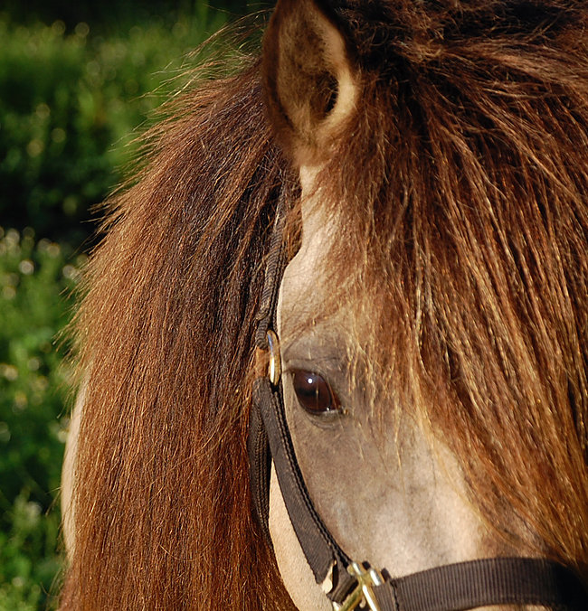

Meet the Gotland
The Swedish Gotland is a small/medium pony, perfect for the whole family. Their kind eyes say it all: I won't hurt you. I'll take care of your children. We can have fun together. They range in size from 11.3-13 hands. Their disposition is simply amazing. They love people. For centuries in their native Gotland, a tiny island off the coast of Sweden, they have served people: carrying children to school and through riding lessons, as delivery ponies, and as harness racing ponies for kids 13-21. They carry the record for the fastest pony trot time on the track. They're very hardy, growing wooly bear coats in the winter and shedding out sleek as a Thoroughbred in the summer. Their endurance is phenomenal, and so is their mind. They rarely need shoes, and they aren't very picky eaters. They look at thistles and think "treat!" They are mellow without being lumbering bores. In fact they are really peppy when you want them to be.
Once on the brink of extinction, these legendary ancient forest horses are back: strong, ready for riding, driving, racing, work, for children and adults. No small breed matches the rare versatility, intelligence, and unflappable disposition of the warm-blooded Gotland.
The Gotland is a true small horse, averaging from 11.3-13 hands in height and weighing around 650 lbs. They are commonly referred to as ponies due to their size. They are calm, athletic, intelligent, and very un-”pony” like, except in height. They have a genuine love of people, and especially children. While very laid back, they do not lack enthusiasm or energy. In their native Sweden, they are used (and hold the record for) harness racing for youth 13-21. They are a light horse, but are very well-built, and are stout enough to carry a 150 lb adult with ease. They excel in many disciplines: English (they love eventing), Western (contest is their specialty), endurance, jumping, trail, and of course, driving.
Gotlands have an amazing brain. You can see it in their kind, soft, intelligent eye. They don’t have the flight reflex of other horses, so they’re nearly bombproof. They love a challenge, and will work together with you to accomplish whatever needs doing. No drama, no acrobatics. They aren’t buckers, and as long as they understand what you want, they’re right there with you. A Gotland will trust you, not fight you. Jumping? They love it. Water, bridges, tarps, trailers, clippers? No problem.
For centuries Gotlands lived in the wild in their native Gotland. They are one of the purest breeds in the horse world. They’re very tough, and require little in the way of pampering. A REAL horse. Shoes are optional on most, and unsoundness is so rare as to be almost unheard of in the breed. Most Gotlands live (healthy) into their thirties. Their shelter needs are minimal, as are their maintenance feed requirements. They do best in pasture, unpampered, though they would never object to a comfy warm stall if it were offered them. While they grow HUGE winter fuzz, they shed out sleek in the summertime.
Some of the Gotlands’ greatest recent successes have been in the field of combined driving. They are tremendously fast, agile, and coordinated, and they seem to love the challenge presented. It’s as if they, too, are planning their course and rising to the challenge of the day, be it dressage, cones, obstacles or marathon. Nothing bothers them, allowing you to focus on what you need to do.
Gotland mares are excellent mothers and easy breeders. Stallions are very easily handled and commonly shown side-by-side with other mares and stallions without incident. Generally, stallions can even be handled by children—their disposition is that good. Stallions can be kept with mares year-round.